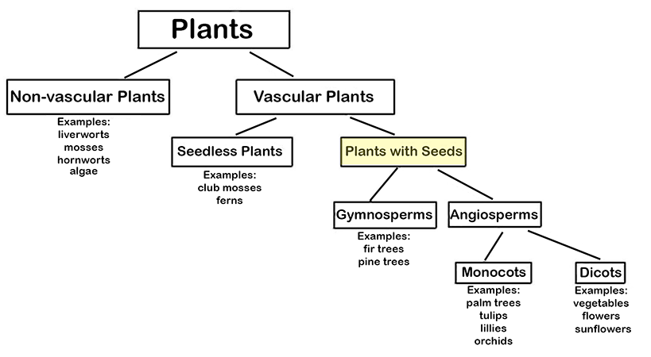
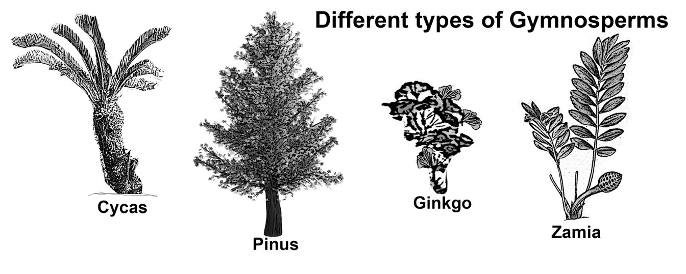
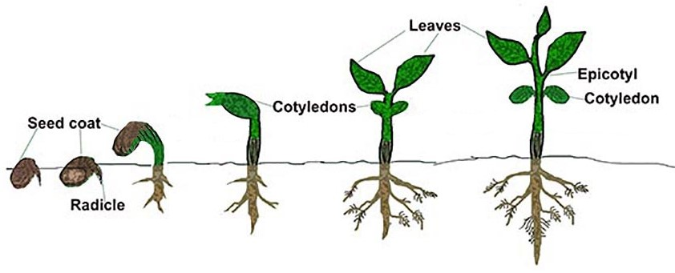

One Type of Vascular Plants: Plants with Seeds. Vascular plants can be divided into two groups: plants that make seeds (spermatophytes: "sperm" means "seeds") and plants that do not. We’ll talk about plants that produce seeds here.
Angiosperms (from Greek: angio means “vessel” and sperm means “seed”) are seed plants that produce flowers.
The seeds of these plants are sometimes enclosed in a fruit (e.g., in apples, oranges, peaches). Fruits are the “vessels” that hold the seeds that developed from the plant's ovary. Sunflowers are one type of angiosperm. Unlike most other angiosperms, though, sunflower seeds are not enclosed in an edible fruit, but instead, the seeds are enclosed in hardened inedible material (which is, biologically speaking, considered a "fruit" because it developed from the surrounding ovary).
Gymnosperms (from Greek: gym means “naked” and sperm means “seed”) do not have flowers. Gymnosperms include pine trees conifers, cycads, Ginkgo and Maidenhair trees, to name a few. (See the picture below for examples of gymnosperms.) Gymnosperms evolved much earlier than angiosperms and were around in the time of dinosaurs (angiosperms had not evolved yet).
Parts of Seeds
A seed is an embryonic (baby) plant inside a protective outer covering (or a shell). The formation of the seed is part of the process of reproduction in seed plants (spermatophytes), including the gymnosperm and angiosperm plants. The seeds of plants look different from each other but they all contain the same basic parts.
In angiosperms, the seeds develop from the ovule in the ovary of the flower of the plant. In gymnosperms, seeds are not surrounded by the ovary/fruit; the seeds are "naked." A drawing of a seed is shown below.
Seeds contain the plant embryo (fertilized egg) surrounded by a protective seed coat.
The embryo, which develops from a zygote, eventually develops into a seedling (a young plant that is just starting to grow above the ground) and then into a mature plant.
How are seeds spread around?
Seeds are spread by gravity, wind, rain, and by animals such as birds, insects and other animals (usually by eating the seeds and pooping them out somewhere else).
Germination is when the embryo in a seed grows into a small plant. Germination starts when the seed absorbs water — and begins to use the stored food to grow the embryo — to when the embryo becomes a small plant (or a seedling). This process is shown in the picture below. Germination may begin as soon as the seed is planted or may take years. This depends on factors like (a) the amount of water the seed is exposed to, and (b) the amount of oxygen the seed has available to it.
Germination process
The seed needs some water but not enough to drown it. Seeds need some sort of material (e.g., soil) to grow in. For seeds to start to germinate, the soil must have the right:
They may also need something that helps break apart the seed coat, like an animal stepping or chewing on it.
To grow into plants, seedlings also need the right amounts of light, nutrients and minerals.


***Note for Teachers: You can access more information about this website and find other resources for science inquiry on the ISP Tutor website.
©2021 Klahr Lab, Carnegie Mellon University. All Rights Reserved
Carnegie Mellon University | Dept. of Psychology | 5000 Forbes Ave. | Pittsburgh, PA 15213 The TED project was funded in part by the Institute of Education Science (IES), Grant R305H060034, and in part by the National Science Foundation, Grant SBE035442. The ISP Tutor project is funded by IES, Grant R305A170176.
The research reported here was supported by the Institute of Education Sciences, U.S. Department of Education, through Grant R305A170176 to Carnegie Mellon University. The opinions expressed are those of the authors and do not represent views of the Institute or the U.S. Department of Education.